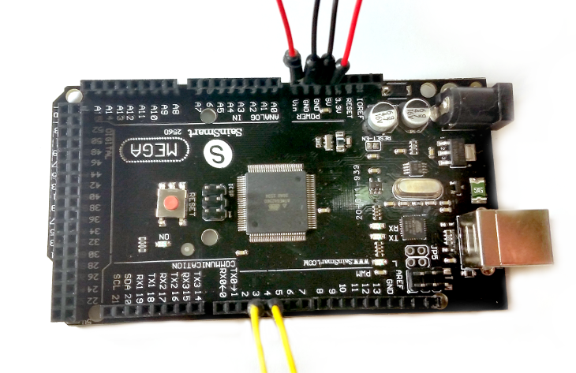

Quizbot Wiring

Components:
Start by grabbing your Arduino and 6 jumper wires. The color of the jumper wires aren't *really* important, but choosing good colors now will make our lives a TON easier in the future.
Connections:
Here's a schematic of our wiring on an Arduino Uno (slightly different than the Arduino Mega). Most components we'll be using have 5V (power) and GND (ground). Most actuators (motors, servos, LEDs) have an output pin as well.

Finished wiring on an Arduino Mega. From here, plug in the wires to the servo. Then connect your USB cable to your computer.